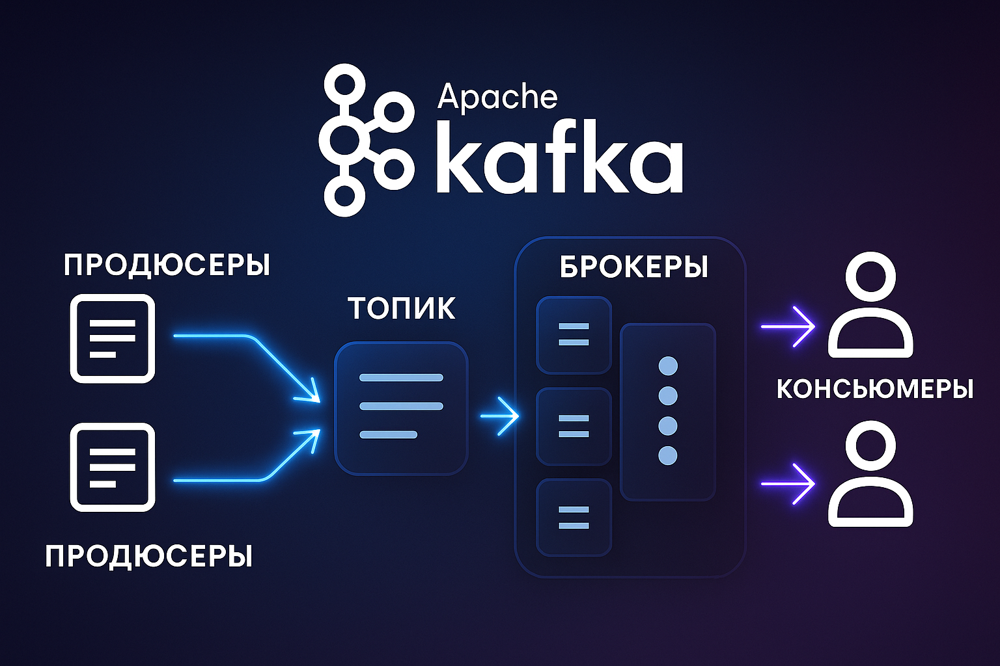
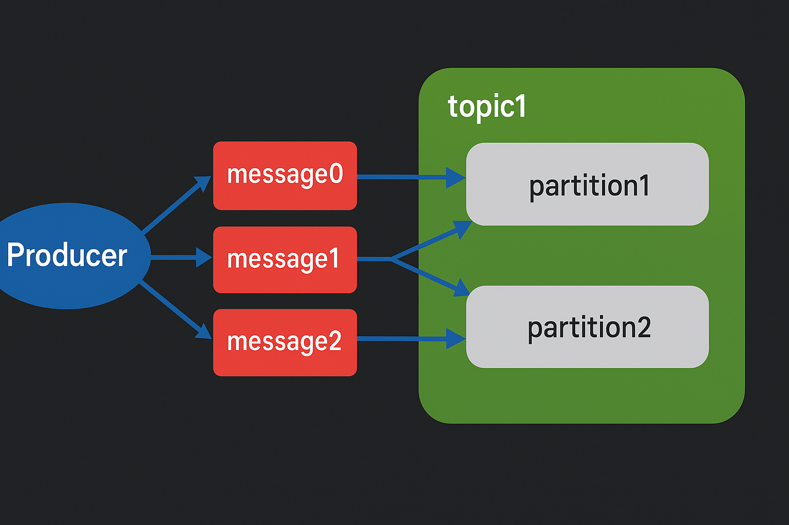

Куратор раздела

Подвальный Артем, Data Engineer/Data Scientist
Хочешь перейти в дата-инженерию, но не знаешь с чего начать? Пиши - составим резюме, продумаем твое развитие https://t.me/ampodvalniy
Хочешь улучшить текущий раздел, внести недостающее или поправить формулировку? Предлагай PR и тегай @Artemlin6231
Немного об этой главе
Apache Kafka используется во всех бигтех-компаниях, и дата-инженеры с ней постоянно взаимодействуют, поэтому понимание принципов её работы полезно
Приятного изучения)
Введение в брокеры сообщений
Брокеры сообщений — это программные системы, обеспечивающие передачу данных (сообщений) между различными приложениями или сервисами. Они выступают в роли посредника между отправителями (продюсерами) и получателями (консьюмерами), снижая связность компонентов, повышая масштабируемость и обеспечивая надёжную доставку данных.
Ключевые функции брокеров сообщений
Организация передачи данных
- Приём сообщений от отправителей (продюсеров).
- Временное хранение сообщений.
- Надёжная доставка сообщений получателям (консьюмерам).
Снижение связности компонентов
- Асинхронное взаимодействие: получатель может быть временно недоступен.
- Унифицированный механизм обмена данными снижает зависимость между системами.
Масштабируемость
- Обработка больших объёмов данных за счёт горизонтального масштабирования и распределения нагрузки.
Надёжность
- Гарантированная доставка сообщений даже при сбоях или отказах отдельных компонентов.
Примеры брокеров сообщений
| Тип | Примеры | Особенности |
|---|---|---|
| Очереди сообщений | RabbitMQ, Amazon SQS | Каждое сообщение читается только одним консьюмером |
| Брокеры (pub/sub) | Apache Kafka, Google Pub/Sub | Сообщения доступны многим подписчикам |
| --- |
Брокеры сообщений являются основой современных распределённых систем, микросервисной архитектуры и стриминговых платформ.
Apache Kafka: Архитектура и Преимущества
Что такое Apache Kafka?

Apache Kafka — это распределённая платформа потоковой передачи сообщений, предназначенная для обработки больших объёмов данных в реальном времени. Kafka используется для обмена сообщениями между приложениями, аналитики, мониторинга и построения событийно-ориентированной архитектуры.
Основные преимущества Kafka
Низкая задержка (Latency)
- Обработка сообщений за 1–10 мс.
- Подходит для real-time аналитики, мониторинга, логирования.
Высокая пропускная способность (Throughput)
- Поддержка миллионов сообщений в секунду.
- Эффективна при потоковой обработке больших объемов данных.
Гибкое хранение
- Сообщения сохраняются на диск.
- Можно задавать время хранения или лимит объема.
Поддержка нескольких потребителей
- Сообщения доступны нескольким консьюмерам параллельно.
Масштабируемость
- Kafka масштабируется горизонтально: можно добавлять новые брокеры без остановки кластера.
Архитектура Kafka: Топики и Партиции
Topic
- Логическая категория данных (как "папка").
- Содержит сообщения, упорядоченные в очереди.
Partition
- Топик делится на партиции — независимые, упорядоченные логи сообщений.
- Партиции позволяют масштабировать топик горизонтально.
Topic: "Orders"
Partition 0: [msg1, msg2, msg3]
Partition 1: [msg4, msg5, msg6]
Partition 2: [msg7, msg8, msg9]
Partition 3: [msg10, msg11, msg12]
Как работает Kafka
Продюсеры (Producers)
Продюсеры отправляют сообщения в партиции топика. Распределение сообщений может происходить: - случайным образом, - равномерно, - по ключу (key) — все сообщения с одним и тем же ключом попадают в одну партицию.
Консьюмеры (Consumers)
Консьюмеры читают сообщения из партиций. В рамках одной consumer-группы: - Каждая партиция обрабатывается только одним консьюмером. - Несколько консьюмеров могут параллельно обрабатывать разные партиции одного топика.
Зачем нужны партиции?
Горизонтальное масштабирование
Партиции могут храниться на разных брокерах, что позволяет распределять данные по кластеру.
Балансировка нагрузки
Каждая партиция может обрабатываться отдельным консьюмером, позволяя масштабировать обработку сообщений.
Повышение пропускной способности
Сообщения из разных партиций могут обрабатываться параллельно, что увеличивает throughput Kafka.
⚠Важно:
Порядок сообщений сохраняется только внутри одной партиции.
Offset — механизм отслеживания прогресса
Offset — уникальный идентификатор (номер) каждого сообщения внутри партиции.
Он используется консьюмерами для: - Определения, какие сообщения уже были прочитаны. - Продолжения чтения с нужного места при повторном запуске.
Пример:
Messages: [msg1, msg2, msg3]
Offsets: [ 0 , 1 , 2 ]
Если консьюмер дошёл до offset = 1, при следующем запуске он начнёт с offset = 2.
Структура сообщения Kafka
- Key — влияет на выбор партиции.
- Value — основное содержимое (например, JSON, строка, байты и т.д.).
- Метаданные:
- Offset
- Timestamp
- Headers (доп. данные)
Почему нельзя полагаться на timestamp
Возможные проблемы:
- Разные источники времени: часы продюсеров и брокеров могут не совпадать.
- Сетевые задержки: сообщение может прийти позже, чем было создано.
- Изменение timestamp: при повторной отправке или обработке в Kafka Streams.
Рекомендация:
Добавляйте поле event_time в value — оно фиксирует бизнес-время события независимо от системных часов.
Использование Kafka
- Взаимодействие между микросервисами.
- Реализация pub/sub-архитектуры.
- Потоковая аналитика и обработка логов.
- Интеграция с Apache Spark, Flink, Hadoop.
Дополнительно
- Официальный сайт: https://kafka.apache.org
- Документация: https://kafka.apache.org/documentation
Продюсеры, Консьюмеры и Консьюмер-группы в Apache Kafka
Apache Kafka реализует модель publish/subscribe, в которой данные публикуются продюсерами (producers), а затем читаются консьюмерами (consumers). Для масштабируемой и отказоустойчивой обработки данных консьюмеры могут объединяться в группы потребителей (consumer groups).
Продюсеры (Producers)
Приложения или сервисы, которые формируют и отправляют сообщения в определённые топики Kafka.
Принцип работы

Распределение по партициям:
- Если указан ключ (key) — Kafka использует хеширование ключа для выбора партиции.
- Если ключ не задан — используется стратегия round-robin (равномерное распределение).
Асинхронная отправка:
- Сообщения группируются в батчи (batches) для повышения производительности.
- Поддерживается как асинхронная, так и синхронная отправка.
Гарантия доставки (acks):
acks=0— без подтверждения (максимальная производительность, низкая надёжность).acks=1— подтверждение от лидера партиции.acks=all— подтверждение от всех реплик (максимальная надёжность).
Операция Produce
Продюсер формирует сообщение, которое включает: - Key — определяет выбор партиции. - Value — основное содержимое сообщения. - Headers — дополнительные метаданные (опционально).
Сообщение отправляется в Kafka-брокер и записывается в конец партиции. Kafka назначает offset и, в зависимости от настроек acks, возвращает подтверждение.
Поток данных:
Producer → Kafka Broker → Partition
Основные настройки продюсера:
acks— уровень подтверждения.batch.size— максимальный размер батча.linger.ms— время ожидания перед отправкой батча.
Консьюмеры (Consumers)
Приложения или сервисы, которые считывают сообщения из топиков Kafka.
Принцип работы
Подписка:
- Консьюмер подписывается на один или несколько топиков.
- Kafka автоматически распределяет партиции между участниками одной группы.
Обработка сообщений:
- Чтение сообщений в порядке их поступления (по offset).
- Консьюмер отслеживает текущий offset для восстановления при сбоях.
Подтверждение обработки:
- Автоматическое: offset обновляется автоматически после обработки.
- Ручное: offset обновляется вручную — повышает надёжность и контроль.
Операция Fetch
Консьюмер выполняет запрос Fetch к брокеру для получения сообщений из партиций, начиная с нужного offset.
Поток данных:
Consumer → Kafka Broker (Fetch Request) → Consumer (Messages)
Основные настройки консьюмера:
fetch.min.bytes— минимальный объём данных в одном ответе.fetch.max.wait.ms— максимальное время ожидания, если данных мало.max.poll.records— количество сообщений за один запрос.
Консьюмер-группы (Consumer Groups)
- Сообщения из одной партиции обрабатываются только одним участником группы.
- Разные группы могут обрабатывать один и тот же топик независимо.
- Это обеспечивает параллелизм и горизонтальное масштабирование.